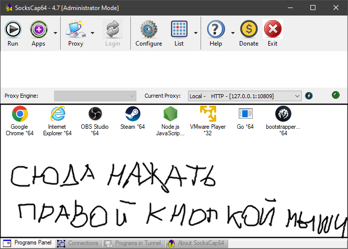
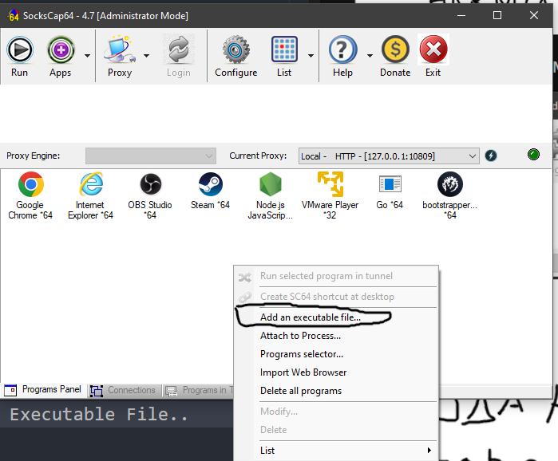
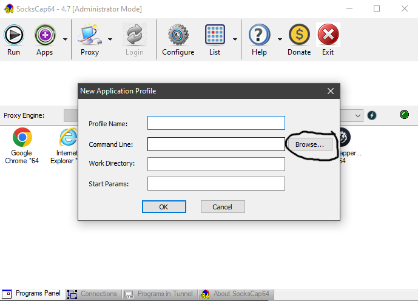
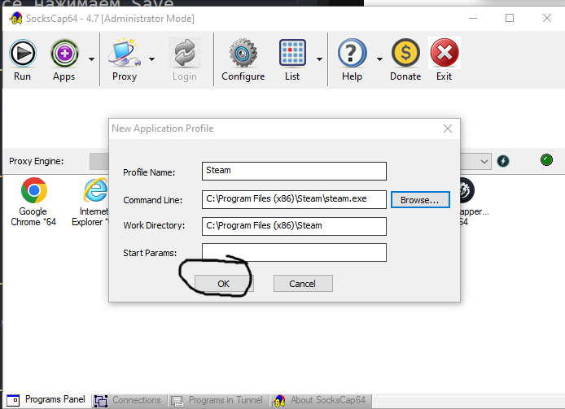
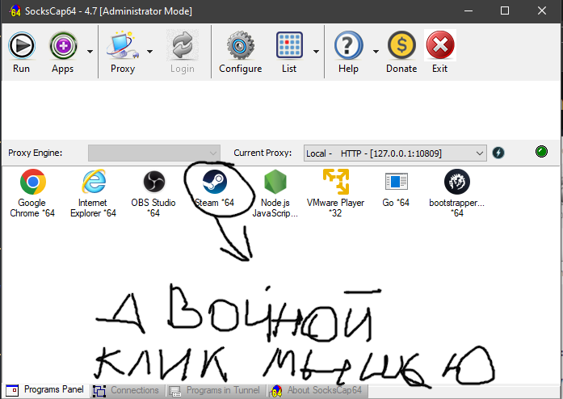

HCPP DEV https://github.com/hcpp20334
Гайд по настройке прокси для стима и других приложении
1. Качаем SocksCap64 c гитхаба SockCap64
2. Распаковываем Архив в папку любую
3. Запускаем SocksCap64.exe от админа
4. Заходим в раздел Proxy
5. нажимаем + там появится пункты.
Двойным клик и чтобы редактировать и так как у меня все
proxy Address : 127.0.0.1 Port : 10809 SOCKS Type https
6. И после того как внесли все нажимаем Save
7. Выходим на главную и на пустом месте
8. в этом окне нажимаем Add Executable File..
9. в этом окне нажимаем browse

10. ищем стим. Обычно он в C://Program Files(x86)/Steam/steam.exe
11. Нажми на steam.exe и открыть
12. Если путь стима добавился то в этом окне нажимаем OK
13. Теперь двойным кликом по иконке запукскаем и пользуемся)

🎉 Присоединяйся к VPN сервису!
💎 При первом пополнении от 100 ₽ ты получишь 25 ₽ бонусом на баланс!
🚀 Быстрое подключение
🌍 Серверы по всему миру
🔒 Надежная защита
👇 Переходи по ссылке:
GLUSH VPN